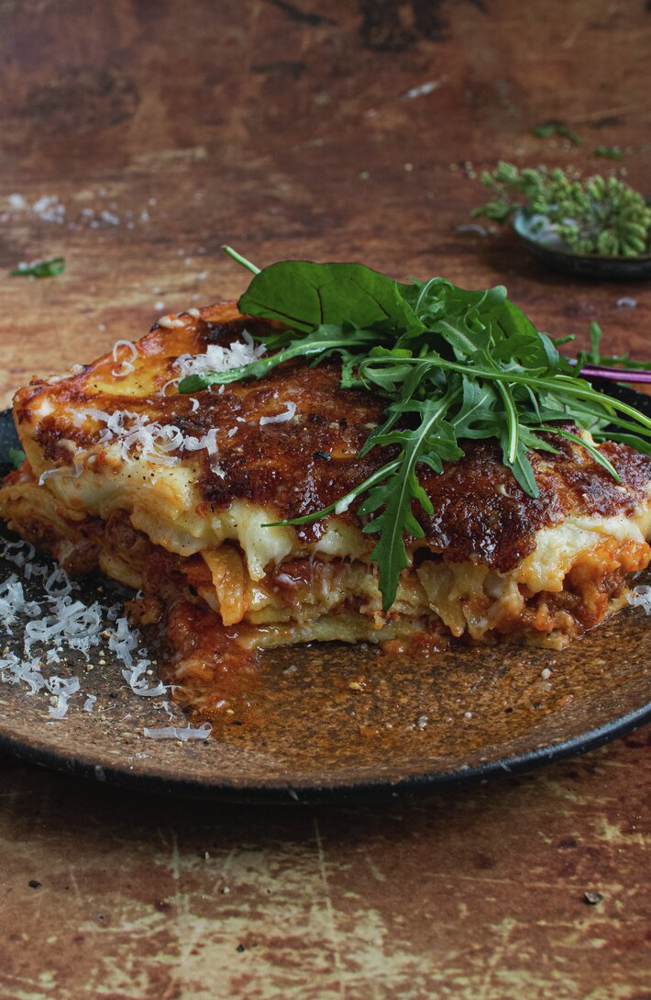

Lasagna recipe

Description
Homemade lasagna is the best!
The dish consist of meat sauce and cheese sauce which is layered with pasta plates
Ingredients
Steps
- Cut the bacon in small cubes. Put oil in a hot pan
and fry the bacon until its golden. Put in some more oil
and brown the meat.
- Put in onion, carrot and cellery until its soft and shiny.
Put in the bacon and meat.
- Put in the puré and let it cook for a couple of minutes.
Put in tomatoes, broth and spices. Let the sauce cook for atleast 10 minutes.
- Melt butter in a pot and stir in flour. Put milk in it while you stir.
Let it boil for aprox. 10 minutes. Put in parmegano and let the cheese melt.
- Put meat sauce, pasta plates and cheese sauce layered in a
form. Finish with pasta plates and cheese sauce. Sprinkle shredded cheese.
- Cook it for 30-40 minutes on 200 degrees Celsius.